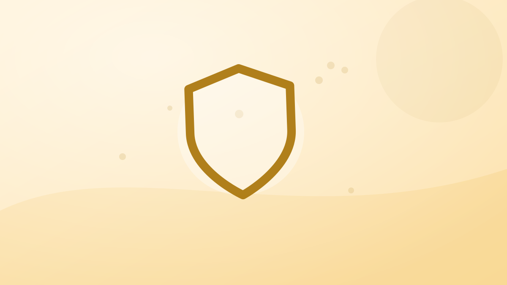

¿Cómo saber si una app para contar calorías es gratis de verdad?
«Gratis» puede ser un plan que no caduca, una prueba que cobra sola al octavo día o una app que no deja escanear un código de barras sin pagar. Siete cosas que mirar en la ficha de Google Play antes de instalar, con nuestra propia app como ejemplo y sus límites a la vista.

Respuesta rápida: Una app para contar calorías es gratis de verdad cuando su plan gratuito no caduca, no pide tarjeta y deja apuntar todas las comidas del día sin pagar. Para saberlo, mira siete cosas en la ficha de Google Play y en la propia app: límites diarios, si la prueba cobra sola, qué funciones básicas son de pago, el precio, cómo se cancela y si puedes borrar tu cuenta.
«Gratis» es la palabra que más se repite en las fichas de las apps de calorías, y la que menos dice. Puede significar un plan que no caduca nunca, una prueba de siete días que cobra sola el octavo, o una app que deja abrir el diario pero no escanear un código de barras. Las tres se anuncian igual. La diferencia está en la letra pequeña, y casi toda se puede leer antes de instalar.
Abajo tienes las siete cosas que conviene mirar, en el orden en que aparecen. Para cada una ponemos como ejemplo lo que hace nuestra app, Fotocal, el contador de calorías con foto, con sus límites a la vista: así puedes comparar con cualquier otra usando los mismos criterios.
1. Qué incluye el plan gratis cada día
Lo primero no es si hay plan gratis, sino qué cabe en él en un día normal. Casi todas las apps ponen un tope: escaneos por día, registros por semana, días de historial. Busca la cifra exacta en la ficha o en la pantalla de planes de la app. Si no aparece por ningún lado, desconfía: un límite que no se publica suele ser un límite pequeño.
Ejemplo, Fotocal: el plan gratis incluye 2 escaneos con IA al día (foto del plato), 1 registro por voz al día, y el escáner de código de barras y Coach Kal sin límite. Sin tarjeta y sin fecha de caducidad. Con dos fotos al día cubres la comida y la cena; el desayuno y lo envasado van por código de barras o a mano.
2. Si la prueba gratuita cobra sola
Una prueba gratuita no es un plan gratis. En Google Play, las suscripciones con prueba se cobran solas al terminarla si no las cancelas, y para empezar la prueba hace falta tener un método de pago en tu cuenta de Google. No tiene nada de malo, pero hay que saberlo: apúntate el día en que termina.
Ejemplo, Fotocal: la prueba de Premium dura 5 días y no cobra nada durante esos días. El sexto, Google Play cobra el plan que elegiste, 6,99 € al mes o 19,99 € al año, salvo que la hayas cancelado antes. Dos o tres días antes del cobro, la app te manda un aviso con la fecha y el importe. El plan gratis, en cambio, no tiene prueba ni cobro: es gratis sin más.
3. Si «gratis» es una prueba que caduca
Hay apps que llaman «gratis» a los primeros días. La forma de saberlo es buscar en la ficha o en la app la palabra «prueba» y una duración. Si la hay, lo gratis termina. Si lo que hay es un plan gratuito con límites, puedes quedarte en él indefinidamente.
Ejemplo, Fotocal: el plan gratis no caduca. Puedes usarlo meses sin pagar nada; Premium solo quita los dos contadores diarios y abre los paneles más detallados. Los detalles están en la página de precios.
4. Qué funciones básicas están detrás del pago
Para contar calorías hacen falta tres cosas: apuntar rápido (foto, código de barras, voz o búsqueda), ver el total del día frente a tu objetivo y ver los macros. Si alguna de esas tres es de pago, el plan gratis sirve de muestra, no para el día a día. Fíjate sobre todo en el código de barras: es la forma más precisa de apuntar lo envasado, y en algunas apps es de pago.
Ejemplo, Fotocal: en el plan gratis tienes el código de barras sin límite, el diario, el objetivo de calorías, los macros, el agua, los pasos y el informe semanal. Lo que es de pago son los escaneos por foto y los registros por voz por encima del límite diario, la tabla nutricional completa del informe semanal y el panel de vitaminas y minerales completo.
5. El precio real, en euros
Una ficha de Google Play avisa con la etiqueta «Compras en aplicaciones» cuando hay algo de pago, pero no siempre dice cuánto. El precio que importa es el que ves en la pantalla de suscripción antes de confirmar, y conviene mirar el anual dividido entre doce: suele ser bastante menos que el mensual.
Ejemplo, Fotocal: 6,99 € al mes o 19,99 € al año, que son unos 1,67 € al mes. Los dos precios están publicados en la web y son los mismos en la app.
6. Cómo se cancela
En Android, las suscripciones de Google Play se cancelan desde Google Play, no borrando la app. Borrar la app no cancela nada. La ruta es siempre la misma: app de Play Store → tu foto de perfil → Pagos y suscripciones → Suscripciones → la app → Cancelar suscripción. Sigues teniendo lo que pagaste hasta el final del periodo.
Ejemplo, Fotocal: se cancela por esa ruta, y si lo haces durante la prueba de 5 días no se cobra nada. Google Play es quien cobra, así que los reembolsos también se piden a Google Play.
7. Si puedes borrar tu cuenta y tus datos
Una app de calorías guarda lo que comes, tu peso y a veces fotos de tus platos. Google Play exige que las apps con cuenta permitan borrarla, y la sección «Seguridad de los datos» de la ficha dice qué datos se recogen y si se pueden eliminar. Léela antes de instalar: es corta.
Ejemplo, Fotocal: puedes borrar la cuenta y todo lo que contiene desde la app, y hay una página que explica cómo borrar tu cuenta de Fotocal paso a paso.
Una forma rápida de comparar dos apps
Haz la misma prueba con las dos durante una semana: apunta todo lo que comes sin pagar. Al final responde tres preguntas: ¿has podido apuntarlo todo?, ¿cuánto tiempo te ha costado cada comida?, ¿te ha pedido pagar para algo que necesitabas? La que pase las tres es la que te sirve gratis. Si lo que te frena es pesar la comida, lee cómo contar calorías sin pesar cada comida, y si dudas entre apps de foto, cómo elegir un contador de calorías por foto.
Y antes de empezar, calcula tu objetivo: la calculadora de calorías diarias te da tu mantenimiento y las cifras para perder o ganar peso, con la misma fórmula que usa la app.
Ideas clave
- «Gratis» puede ser un plan sin fecha de fin o una prueba que cobra sola: busca la palabra «prueba» y una duración.
- Lo que importa es qué cabe en un día gratis: límites de escaneo, código de barras y macros incluidos o no.
- Las suscripciones de Google Play se cancelan desde Google Play; borrar la app no cancela nada.
- Lee la sección «Seguridad de los datos» de la ficha y comprueba que puedes borrar tu cuenta.
- Fotocal: plan gratis sin tarjeta y sin caducidad, con 2 escaneos con IA al día, 1 registro por voz al día, y código de barras y Coach Kal sin límite. Premium: 6,99 € al mes o 19,99 € al año, con 5 días de prueba.
Preguntas que hace la gente
¿Qué contador de calorías es gratuito?
Muchos tienen plan gratis, pero con límites distintos. Para comparar, mira si el plan gratis caduca, si pide tarjeta, cuántos registros deja al día y si el código de barras y los macros están incluidos. Fotocal tiene un plan gratis sin tarjeta y sin caducidad: 2 escaneos con IA al día, 1 registro por voz al día, y código de barras y Coach Kal sin límite.
¿Hay alguna app para contar calorías totalmente gratis?
Hay apps con un plan gratuito que no caduca y con el que se puede apuntar todo el día, aunque casi siempre con algún límite. Lo importante es que lo básico (apuntar, ver el total y los macros) no sea de pago. Prueba una semana apuntándolo todo sin pagar: si puedes, para ti es gratis de verdad.
¿La prueba gratuita de una app me cobra si no la cancelo?
Sí, en Google Play las suscripciones con prueba se cobran solas al terminar la prueba si no las cancelas. En Fotocal la prueba dura 5 días sin cobro; el sexto día Google Play cobra 6,99 € al mes o 19,99 € al año, y la app avisa dos o tres días antes.
¿Si borro la app se cancela la suscripción?
No. Las suscripciones de Google Play se cancelan desde la app de Play Store: tu foto de perfil → Pagos y suscripciones → Suscripciones → la app → Cancelar suscripción. Borrar la app no cancela nada.
Este artículo es información general, no consejo médico.
Herramientas para este tema: Calorías de la tortilla de patatas · Calorías de la paella valenciana · Calculadora de calorías diarias